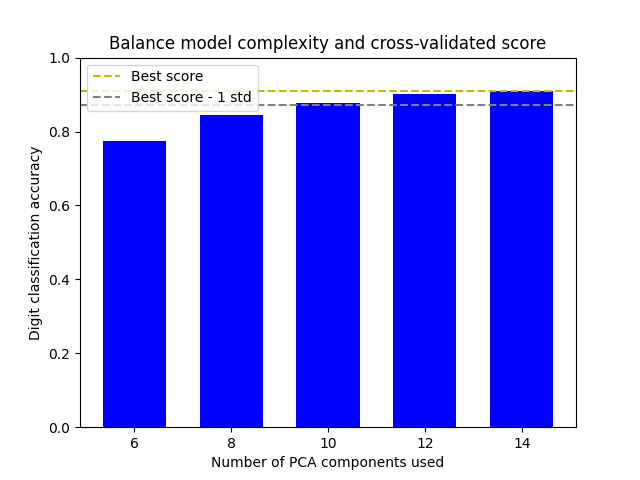

Note
Go to the end to download the full example code or to run this example in your browser via Binder
Balance model complexity and cross-validated score¶
This example balances model complexity and cross-validated score by finding a decent accuracy within 1 standard deviation of the best accuracy score while minimising the number of PCA components [1].
The figure shows the trade-off between cross-validated score and the number of PCA components. The balanced case is when n_components=10 and accuracy=0.88, which falls into the range within 1 standard deviation of the best accuracy score.
[1] Hastie, T., Tibshirani, R.,, Friedman, J. (2001). Model Assessment and Selection. The Elements of Statistical Learning (pp. 219-260). New York, NY, USA: Springer New York Inc..
The best_index_ is 2
The n_components selected is 10
The corresponding accuracy score is 0.88
# Author: Wenhao Zhang <wenhaoz@ucla.edu>
import matplotlib.pyplot as plt
import numpy as np
from sklearn.datasets import load_digits
from sklearn.decomposition import PCA
from sklearn.model_selection import GridSearchCV
from sklearn.pipeline import Pipeline
from sklearn.svm import LinearSVC
def lower_bound(cv_results):
"""
Calculate the lower bound within 1 standard deviation
of the best `mean_test_scores`.
Parameters
----------
cv_results : dict of numpy(masked) ndarrays
See attribute cv_results_ of `GridSearchCV`
Returns
-------
float
Lower bound within 1 standard deviation of the
best `mean_test_score`.
"""
best_score_idx = np.argmax(cv_results["mean_test_score"])
return (
cv_results["mean_test_score"][best_score_idx]
- cv_results["std_test_score"][best_score_idx]
)
def best_low_complexity(cv_results):
"""
Balance model complexity with cross-validated score.
Parameters
----------
cv_results : dict of numpy(masked) ndarrays
See attribute cv_results_ of `GridSearchCV`.
Return
------
int
Index of a model that has the fewest PCA components
while has its test score within 1 standard deviation of the best
`mean_test_score`.
"""
threshold = lower_bound(cv_results)
candidate_idx = np.flatnonzero(cv_results["mean_test_score"] >= threshold)
best_idx = candidate_idx[
cv_results["param_reduce_dim__n_components"][candidate_idx].argmin()
]
return best_idx
pipe = Pipeline(
[
("reduce_dim", PCA(random_state=42)),
("classify", LinearSVC(random_state=42, C=0.01, dual="auto")),
]
)
param_grid = {"reduce_dim__n_components": [6, 8, 10, 12, 14]}
grid = GridSearchCV(
pipe,
cv=10,
n_jobs=1,
param_grid=param_grid,
scoring="accuracy",
refit=best_low_complexity,
)
X, y = load_digits(return_X_y=True)
grid.fit(X, y)
n_components = grid.cv_results_["param_reduce_dim__n_components"]
test_scores = grid.cv_results_["mean_test_score"]
plt.figure()
plt.bar(n_components, test_scores, width=1.3, color="b")
lower = lower_bound(grid.cv_results_)
plt.axhline(np.max(test_scores), linestyle="--", color="y", label="Best score")
plt.axhline(lower, linestyle="--", color=".5", label="Best score - 1 std")
plt.title("Balance model complexity and cross-validated score")
plt.xlabel("Number of PCA components used")
plt.ylabel("Digit classification accuracy")
plt.xticks(n_components.tolist())
plt.ylim((0, 1.0))
plt.legend(loc="upper left")
best_index_ = grid.best_index_
print("The best_index_ is %d" % best_index_)
print("The n_components selected is %d" % n_components[best_index_])
print(
"The corresponding accuracy score is %.2f"
% grid.cv_results_["mean_test_score"][best_index_]
)
plt.show()
Total running time of the script: (0 minutes 3.103 seconds)